Un phénomène invisible, spontané, imprévisible pour un noyau seul — et pourtant parfaitement prévisible pour un milliard d'entre eux. Il est partout autour de toi, dans les roches, dans l'air, et dans ton propre corps.
Comprendre pourquoi certains noyaux se transforment tout seuls, ce qu'ils émettent en le faisant, et pourquoi personne ne peut dire quand.
Tu sors du chapitre sur la nucléosynthèse : tu sais d'où viennent les noyaux des atomes. Celui-ci raconte ce que certains d'entre eux deviennent. Avant d'ouvrir le cours, fais le point sur ce que tu sais déjà.
Ta demande du 04/10 : un QCM diagnostique à côté de la question rédigée. Sept questions : la composition du noyau et son écriture conventionnelle (seconde), les isotopes et la fusion (nucléosynthèse), la radioactivité au quotidien, et un premier contact avec les rayonnements. Aucune demi-vie. Les corrections annoncent la suite sans la livrer. Il est posé data-facultatif : sans enjeu, il ne valide rien et ne s'enregistre pas — à changer si tu veux en voir les résultats au tableau de bord.
« Radioactivité » est un mot que tu as déjà entendu — au journal, dans un film, à propos d'une centrale ou d'un accident. Aucune recherche : ce qui compte ici, c'est ce que tu as déjà, juste ou faux. Tu relieras cette réponse à la fin de chaque séance.
Il n'y a pas de bonne réponse attendue à ce stade.
Des souvenirs de seconde, du chapitre précédent, et de ta vie de tous les jours. Si tu te trompes, tant mieux : tu sauras ce que le chapitre va t'apprendre.
Tu viens de rappeler de quoi est fait un noyau : des protons et des neutrons. La plupart des noyaux gardent ce contenu pour toujours. Pas tous.
🎬 Rappels de seconde : les transformations nucléaires. Mets en pause dès que tu veux noter quelque chose : un QCM t'attend juste après.
Écrit à partir de la transcription de la vidéo (_transcriptions/1re-es-t1-c2/, hors Git). Chaque question renvoie au moment de la vidéo qui y répond.
Certains noyaux possèdent un excès de protons ou de neutrons, ce qui déséquilibre les forces qui maintiennent le noyau cohérent. Ils ne gardent pas leur contenu : tôt ou tard, ils se transforment d'eux-mêmes en un autre noyau.
On dit aussi ou radioisotope pour désigner un noyau radioactif : tu croiseras ces mots dans les documents.
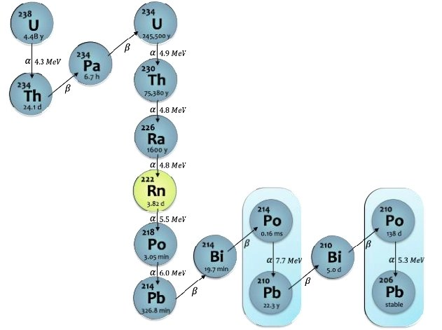
L'uranium 238 contient tant de protons qu'ils se repoussent plus que le noyau ne peut le supporter. Il se désintègre en thorium 234 : c'est la première flèche, en haut à gauche de l'image 1.
Les lettres α et β écrites sur les flèches disent ce que le noyau émet en se désintégrant : c'est l'objet de l'étape suivante.
Sur les flèches de la cascade de l'uranium, tu as vu passer des α et des β. Ce sont les particules que le noyau père expulse pour devenir son fils. Il y en a trois sortes, et l'écriture des équations, vue en seconde et rappelée dans la vidéo, suffit à les reconnaître.
Ta demande du 04/10 : passer par les équations de transformation nucléaire, β⁺ compris. Trois exemples choisis pour servir plus loin : le radium 226 (vidéo et QCM de l'étape), le carbone 14 (datation, séance 3) et le fluor 18 (imagerie médicale, séance 2). L'image d'origine des deux radioactivités est retirée de l'étape, comme demandé ; celle du radium passe dans le QCM.
⚠ Le programme d'ES précise qu'aucune connaissance n'est exigible sur les différents types de radioactivité. Les équations restent donc en support (○), et le QCM ne demande que de lire une équation, pas de la connaître.
⚠ Le cours source disait que le rayonnement γ est « toujours émis ». C'est inexact : le carbone 14 ou le strontium 90, par exemple, n'en émettent pas. Écrit ici « souvent » — à confirmer.
Le noyau éjecte un noyau d'hélium : 2 protons et 2 neutrons. C'est la particule alpha.
Le radium 226 devient du radon 222.
Le noyau éjecte un électron. Il garde le même nombre de nucléons, mais gagne un proton.
Le carbone 14 devient de l'azote 14.
Le noyau éjecte un positon, le jumeau positif de l'électron. Il perd un proton.
Le fluor 18 devient de l'oxygène 18.
Vérifie la règle de la vidéo sur chaque équation : le total des nombres du haut (A) et celui des nombres du bas (Z) sont les mêmes de part et d'autre de la flèche. Pour le radium : 226 = 222 + 4 et 88 = 86 + 2.
Très souvent, le noyau fils naît avec un surplus d'énergie. Il s'en débarrasse aussitôt en émettant un rayonnement gamma (γ) : ce n'est pas une particule de matière, mais de l'énergie qui voyage, de la même famille que la lumière et les rayons X. Comme tu l'as entendu dans la vidéo, on ne l'écrit pas dans l'équation.
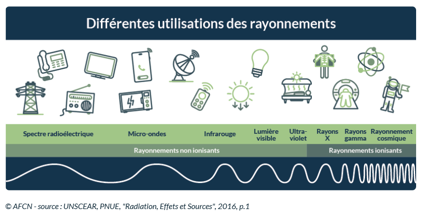
| Désintégration | Ce qui part du noyau | Ce que c'est |
|---|---|---|
| α | 42He | un noyau d'hélium |
| β⁻ | 0−1e | un électron |
| β⁺ | 01e | un positon |
| γ | un rayonnement | de l'énergie, pas de matière |
Tu sais maintenant ce qu'émet un noyau qui se désintègre. Reste une question que personne n'a encore posée : quand le fait-il ? Une simulation va te répondre, et la réponse n'est pas celle qu'on attend.
Ouvre l'animation, puis va dans l'onglet Atome seul. Une animation se lance.
▶ Ouvrir l'animation PhET (nouvel onglet)
Lance 5 autres simulations avec le bouton Réinitialiser le noyau. Note à chaque fois le temps de désintégration, affiché en haut à gauche de l'animation.
Ton audit : séparer l'imprévisible pour un noyau (séance 1) de la prévision pour une population (plus tard). Le texte à trous ne parle donc plus de « prévisible pour un grand nombre », ni le « à retenir ». Il s'ouvre en fenêtre, cours masqué.
Facultatif, jamais évalué — mais si tu as fini avant les autres, c'est là que ça devient intéressant.
🎬 Pourquoi certains noyaux tiennent et d'autres non : la carte des noyaux, et la vallée où ils cherchent tous à tomber.
L'IRSN — l'institut public français de recherche sur les risques nucléaires — décrit l'impact du polonium 210 sur l'organisme. Un émetteur α : inoffensif à l'extérieur du corps, redoutable à l'intérieur. Tu comprendras pourquoi en séance 2.
🔗 Lire la fiche IRSN (nouvel onglet)
Comprendre la radioactivité — le dossier pédagogique du CEA, le Commissariat à l'énergie atomique.
Sortir du noyau pour aller vers toi : d'où vient la radioactivité que tu reçois, combien tu en reçois vraiment, ce qu'elle fait au corps et comment on s'en protège.
En séance 1, tu as regardé un noyau se désintégrer, seul, dans une simulation. Dans la réalité, des milliards de noyaux le font en ce moment, tout autour de toi. D'où viennent-ils ?
🎬 Naturelle ou artificielle : d'où vient la radioactivité qui nous entoure. Prends des notes : un QCM t'attend juste après.
Des noyaux radioactifs formés lors de la nucléosynthèse se désintègrent continûment dans les roches de la croûte terrestre, dans l'air, dans les aliments — et dans ton corps. C'est la .
Certains noyaux radioactifs n'existent plus sur Terre ; on sait pourtant les recréer, dans un accélérateur de particules ou un réacteur nucléaire. Depuis le début du XXe siècle, cette s'ajoute à la naturelle.
Le schéma des effluents d'une installation nucléaire (IRSN), que tu trouvais moins dans le thème, est passé dans le pour aller plus loin de la séance (2.6). L'infographie des origines que tu cherchais pourra se poser ici : le cadre de réservation est retiré depuis l'ouverture aux élèves.
La vidéo de l'étape précédente l'annonçait à la fin : les trois émissions de la séance 1 ne vont pas aussi loin. C'est ce qui décide de la façon dont on s'en protège.
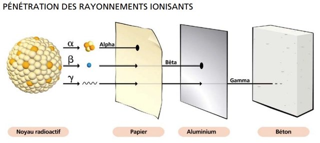
Tu sais d'où vient la radioactivité naturelle, et ce qui l'arrête. Combien en reçois-tu, toi, à Poitiers ? Des balises la mesurent en continu, partout en Europe.
Le réseau REMon (Radioactivity Environmental Monitoring) publie en continu les mesures des balises de surveillance de toute l'Europe. Rejoins la carte, cherche Poitiers, et relève la dose maximale de la semaine écoulée.
🗺 Ouvrir la carte REMon (nouvel onglet)
La carte ne donne pas la dose en sieverts (Sv), mais un débit de dose en nanosieverts par heure (nSv/h). Pour obtenir une dose sur une année, il faut convertir, et tenir compte de la durée.
Deux gestes, l'un après l'autre :
Les préfixes nano, micro, milli te jouent des tours ? Une vidéo de rappel sur les puissances de 10 (jaicompris Maths, YouTube).
| Balise | Débit de dose habituel |
|---|---|
| Poitiers | ≈ 80 nSv/h |
| Communes autour de Poitiers | de 78 à 102 nSv/h |
| Limoges (granit du Limousin) | ≈ 105 nSv/h |
| Finistère (granit breton) | de 99 à 126 nSv/h |
| Paris | de 40 à 60 nSv/h |
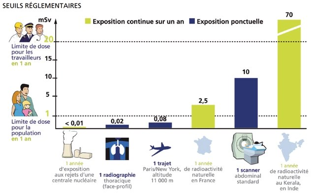
La balise de Poitiers mesure ce que reçoit le lieu. Toi, tu manges, tu voyages, tu passes des radios : tout cela compte aussi.
🎬 D'où vient, concrètement, la dose que reçoit chacun d'entre nous ? Un QCM t'attend juste après.
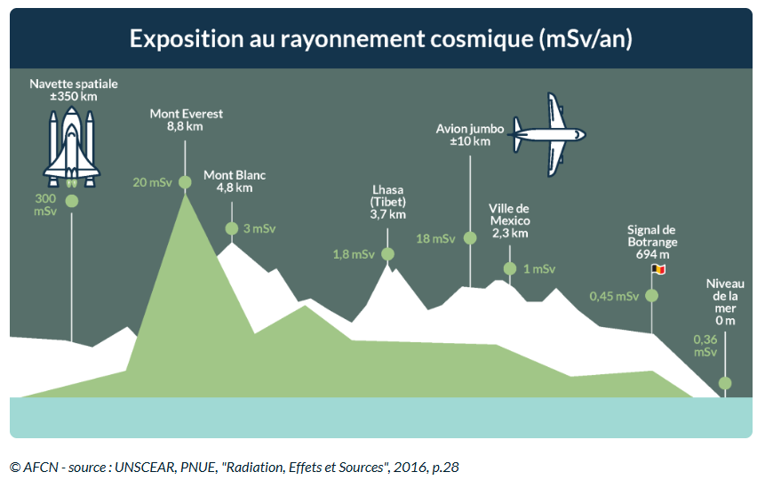
L'ASNR (Autorité de sûreté nucléaire et de radioprotection, service public français) met en ligne un questionnaire qui estime ton exposition annuelle. Complète-le, puis garde le résultat : dans un dossier que tu crées sur ton OneDrive si tu le souhaites — c'est le plus pratique — ou comme il te convient.
📊 Ouvrir ExPop — ASNR (nouvel onglet)
Ton cours disait 4,5 mSv/an (bilan IRSN de 2021). L'ASNR a publié le 28/09/2026 un nouveau bilan, EXPOP 2020-2024 : 7,1 mSv/an — radon 3,9 (55 %), imagerie médicale 1,6 (23 %), alimentation 0,65, sol 0,62, cosmique 0,31. La hausse ne vient pas d'une exposition plus forte, mais d'un nouveau coefficient de dose du radon. Le chiffre est remplacé dans tout le chapitre (QCM compris) — à confirmer. Certaines pages de l'ASNR et ExPop affichent peut-être encore l'ancien.
Sources : annonce de l'ASNR · données ouvertes. Dans la Vienne, le radon pèse 4,5 mSv/an en moyenne (Haute-Vienne : 11). Poitiers est en zone 1 du potentiel radon, mais Ligugé et Smarves, toutes proches, sont en zone 3.
Tu as maintenant un chiffre, le tien, en millisieverts. Reste à savoir ce qu'il veut dire pour ton corps — et à partir de quand on s'inquiète.
L'exposition à de fortes doses de rayonnements, mesurée en sieverts, fragilise l'organisme et peut avoir de nombreux effets sur la santé. Ces effets dépendent de la dose reçue et de la durée de l'exposition.
Source : LaRadioactivité.com.
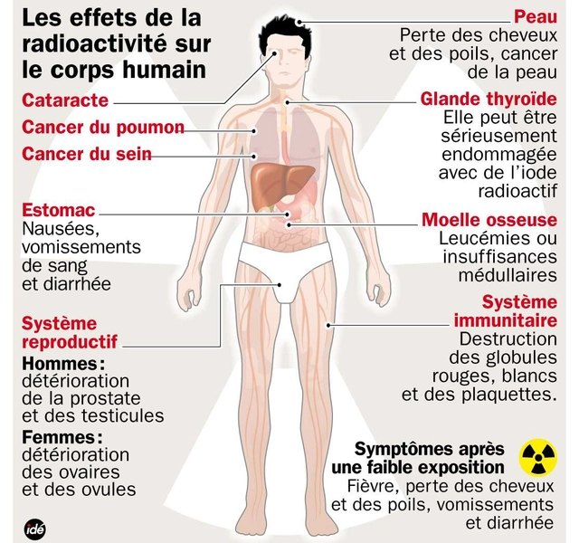
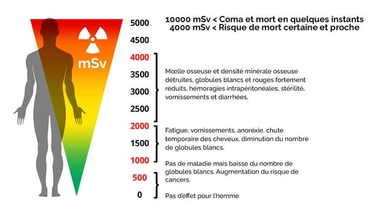
Les professionnels de la radiologie médicale — radiographie, scanner, scintigraphie, radiothérapie — reçoivent des doses répétées, plus fortes à proximité du patient. Leur protection est double :
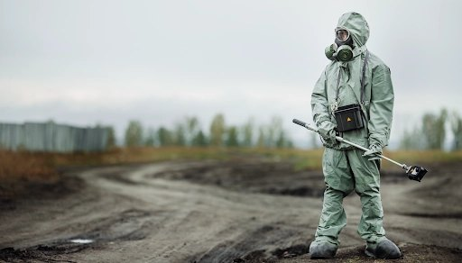
Ton audit : un QCM qui vérifie les étapes 2.3, 2.4 et 2.5 d'un coup. Les quatre questions d'origine sont gardées, trois sont ajoutées en tête (conversion, moyenne française, principales sources).
Le Réseau national de mesures de la radioactivité de l'environnement publie toutes les mesures faites en France : dans l'air, l'eau, le sol, les aliments. Cherche ta commune, puis les sites les plus proches de Poitiers : de quelle nature sont-ils ? Une centrale, mais pas seulement — anciennes mines d'uranium, installations industrielles qui stérilisent par rayonnement, usine chimique…
🔎 Ouvrir mesure-radioactivite.fr (nouvel onglet)
Quelques sites à chercher, à vol d'oiseau de Poitiers : la centrale de Civaux (28 km), celle de Chinon (73 km), les anciennes mines d'uranium de Haute-Vienne et des Deux-Sèvres (75 à 100 km), l'usine d'irradiation de Pouzauges en Vendée (93 km), l'ancienne usine de terres rares de La Rochelle (127 km). Et à Poitiers même, le service de médecine nucléaire du CHU.
Ionisos n'a aucun site en Nouvelle-Aquitaine : le plus proche est Pouzauges (Vendée). Aucune ancienne mine d'uranium dans la Vienne ni en Charente. L'usine de La Rochelle (Solvay, ex-Rhodia) garde des résidus contenant du thorium (inventaire Andra). Le chemin de clics exact du mode guidé n'a pas été vérifié ; à tester sur iPad. Le site charge des polices chez Google : sans conséquence pour la consultation, à savoir au regard de ta règle RGPD.
🎬 Becquerel, gray, sievert : trois unités qu'on confond tout le temps, et qui ne mesurent pas la même chose.
🎬 Bilan 1 — L'exposition à la radioactivité : irradiation et contamination.
🎬 Bilan 2 — La radioactivité expliquée en 3 minutes.
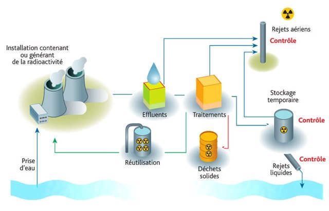
Passer du noyau seul, imprévisible, à la population de noyaux, parfaitement prévisible — et apprendre à lire une demi-vie sur une courbe.
En séance 1, tu as constaté qu'on ne peut pas dire quand un noyau va se désintégrer. Aujourd'hui, la classe entière va observer ce que font plusieurs centaines de noyaux à la fois. Ton professeur projette la courbe au tableau.
Ta version papier, portée dans la page : 10 noyaux par élève par défaut (de 5 à 100 au choix, avant le premier lancer), de vrais dés, un 1 = désintégration, et l'élève marque lui-même ses noyaux. La page ne vérifie rien : elle tient le compte et l'envoie. Pour qui manque de dés, un lanceur animé s'ouvre par le bouton 🎲 Dés, au-dessus du glossaire. Choix restant à confirmer : chaque élève avance à son rythme (le tableau de bord additionne par numéro de lancer) ; un élève non connecté joue, mais ne compte pas dans la courbe.
La courbe de la classe se projette depuis prof/decroissance.html (lien dans le tableau de bord, espace ES 1re).
— seulement si ton professeur te le demande.
Pas assez de dés ? Ouvre le lanceur avec le bouton 🎲 Dés, en bas à droite de l'écran.
Chaque dé tombait au hasard, et pourtant la courbe de la classe avait une forme bien à elle. Ce que vous venez de construire porte un nom.
Il n'est pas possible de prédire à quel instant un unique noyau radioactif va se désintégrer. En revanche, pour un échantillon contenant un grand nombre de noyaux, on peut déterminer comment leur nombre évolue au cours du temps.
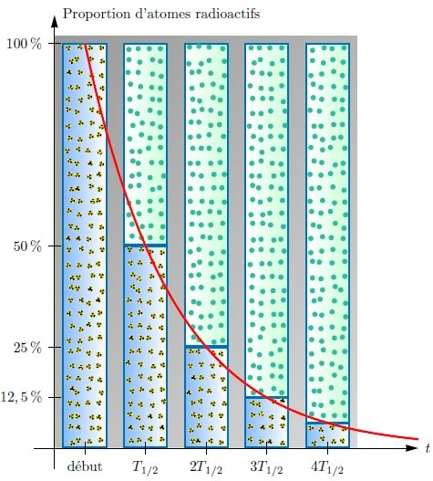
Même expérience que les dés, avec autant de noyaux que tu veux. Lance la simulation avec Simuler :
Avec les dés, un noyau avait une chance sur six de se désintégrer à chaque lancer. Avec un dé à vingt faces, la courbe serait descendue bien plus lentement. Ce « dé » propre à chaque noyau porte un nom : λ.
La loi de décroissance radioactive se modélise par une fonction exponentielle décroissante. Son expression exacte n'est pas à connaître ; les grandeurs qui la composent, si.
N(t) = N0 × e−λt
| Symbole | Ce que c'est |
|---|---|
| N0 | le nombre de noyaux radioactifs au départ — les tiens au départ des dés, quelques centaines pour la classe |
| N(t) | le nombre de noyaux radioactifs à l'instant t |
| λ (lambda) | la constante radioactive, propre à chaque radionucléide |
| e | la fonction exponentielle — tu la trouves sur ta calculatrice |
C'est la fonction exponentielle. ex s'écrit aussi exp(x) : les deux notations disent exactement la même chose.
On l'étudie en spécialité mathématiques ; si tu ne l'as pas encore vue, ou si tu ne suis pas cette spécialité, aucun souci : ici, ce n'est qu'une touche de ta calculatrice (notée ex ou exp).
Ce qu'il faut en retenir : ex croît de plus en plus vite, et e−x décroît de plus en plus lentement, sans jamais atteindre zéro. C'est exactement la forme de la courbe des dés.
Ta demande : expliquer ce qu'est la fonction exponentielle, que la plupart des élèves n'ont pas vue. Elle est au programme de la spécialité mathématiques de première — à vérifier dans le BO si tu veux préciser le moment de l'année.
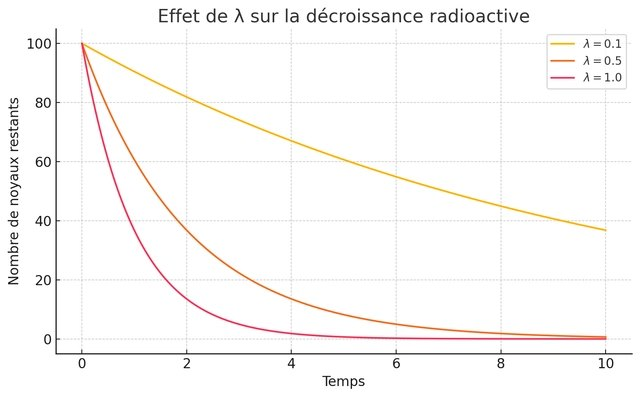
Sur la courbe de la classe, tu as cherché au bout de combien de lancers la moitié des noyaux avait disparu. Cette durée-là est la plus utile de tout le chapitre.
On ne peut toujours pas dire quand un noyau se désintégrera. Mais connaissant sa demi-vie, on sait qu'il a une chance sur deux de l'avoir fait au bout de t1/2.
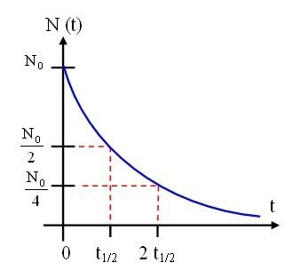
🎬 La méthode graphique, en animation.
Reviens sur l'animation PhET de la séance 1, onglet Atomes multiples : cette fois, tu ne regardes plus un noyau, mais une population entière — comme la classe avec ses dés.
Tu sais lire une demi-vie. Si la classe avait eu deux fois plus de noyaux, la moitié serait-elle partie plus vite, ou plus lentement ? Une simulation va trancher.
Rejoins l'animation, puis fixe la constante radioactive à λ = 0,5 s⁻¹. Sur tablette, cette valeur ne se modifie pas : ce n'est pas grave, continue.
▶ Ouvrir l'animation (ensciences.fr)
Tu connais déjà ce noyau : c'est le père du radon, en séance 1. Voici sa demi-vie, et ce qu'elle signifie pour des objets bien réels.
Le radium 226 a été découvert par Marie et Pierre Curie en 1898. Sa demi-vie est de 1 600 ans. Dans les années 1910-1930, on l'a massivement utilisé dans des peintures luminescentes — montres, instruments de bord, cadrans de téléphone —, car son rayonnement faisait briller un composant phosphorescent.
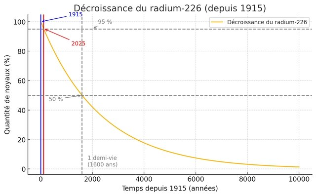
Une montre peinte au radium en 1915 contient encore près de 95 % de son radium en 2025. Le noyau « ignore » les siècles : il suit sa propre horloge.
Les ouvrières qui peignaient les cadrans au radium affinaient leur pinceau avec les lèvres. On leur avait dit que c'était sans danger. Ce que tu as appris en séance 2 sur les émetteurs α à l'intérieur du corps explique la suite — et leur procès a fondé une partie du droit du travail moderne.
🎬 L'histoire des Radium Girls.
Trois exercices pour se servir de tout ce qui précède : reconnaître un noyau à sa demi-vie, remonter le temps d'un échantillon, et estimer quand une zone contaminée redevient fréquentable.
| Noyau radioactif | Temps de demi-vie (années) |
|---|---|
| cobalt 60 | 5,2 |
| tritium | 12,2 |
| strontium 90 | 28,1 |
| césium 137 | 30 |
| américium 241 | 432 |
| radium 226 | 1 600 |
| carbone 14 | 5 730 |
| plutonium 239 | 24 110 |
| neptunium 237 | 2 140 000 |
| iode 129 | 15 700 000 |
| uranium 238 | 4 470 000 000 |
Le modèle GeoGebra hébergé chez Quizéo est remplacé par une courbe tracée dans la page, avec un point A qu'on déplace : ni compte GeoGebra, ni installation, ni site tiers (un cadre GeoGebra intégré enverrait l'adresse IP des élèves à GeoGebra dès le chargement). Le noyau choisi est l'américium 241 (t1/2 = 432 ans), loin de ses voisins du tableau : 30 et 1 600 ans. N₀ = 8 000 noyaux. Change-le si l'énoncé d'origine en visait un autre.
Consulte le tableau des demi-vies. Déplace le point A sur la courbe pour en extraire les données dont tu as besoin.
Dans un échantillon, on comptabilise 2 milliards de noyaux radioactifs de radium 226. Combien cet échantillon en contenait-il il y a 1 600 ans ? Et il y a 9 600 ans ?
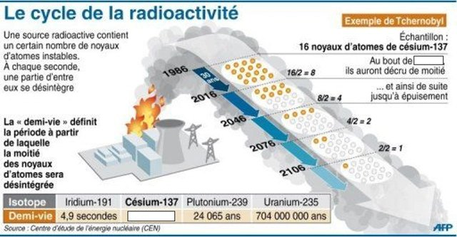
🎬 Du césium 137 radioactif dans le parc du Mercantour — en France, des années après Tchernobyl.
En considérant que les dangers liés au césium 137 deviennent négligeables à partir de 5 % de la quantité initiale, à partir de quelle année pourra-t-on considérer que la zone d'exclusion de Tchernobyl redevient sans risque majeur pour la santé humaine ?
Tu as fini les exercices. Avant le grand QCM, relis le chapitre en entier : chaque carte reprend les « à retenir » de quelques étapes, dans l'ordre.
Les encarts de rappel que tu avais en tête sont ceux de la terminale (« Deux siècles d'énergie électrique », bilan 3.1). Repris ici en sept cartes, tirées des « à retenir » du chapitre.
Un noyau radioactif est instable : il se désintègre spontanément.
Le noyau père devient un noyau fils, plus stable — parfois radioactif lui aussi : c'est une cascade, jusqu'à un noyau stable.
Une particule : un noyau d'hélium (α), un électron (β⁻) ou un positon (β⁺). Souvent aussi un rayonnement γ, qui n'est pas de la matière.
A et Z se conservent de part et d'autre de la flèche.
L'instant où un noyau donné se désintègre est aléatoire : personne ne peut le prévoir.
La radioactivité est d'abord naturelle ; les activités humaines y ajoutent une part artificielle.
α est arrêté par du papier, β par de l'aluminium, γ par du béton ou du plomb. Mais un émetteur α ou β est dangereux à l'intérieur du corps.
Elle se mesure en sieverts (Sv), souvent en mSv. Moyenne en France : environ 7 mSv par an, surtout le radon et la médecine.
Les effets dépendent de la dose et de la durée. Limite pour la population : 1 mSv par an, hors naturel et médical.
Pour un grand nombre de noyaux, le nombre de noyaux radioactifs suit la loi de décroissance radioactive : une exponentielle, rapide au début, de plus en plus lente.
Sa vitesse dépend de la constante radioactive λ, propre à chaque radionucléide.
Le temps de demi-vie t1/2 est la durée au bout de laquelle la moitié des noyaux s'est désintégrée.
Propre à chaque radionucléide, il ne dépend pas du nombre de noyaux de départ. Il permet de dater.
Vingt questions, une ou deux par étape du cours, dans l'ordre du chapitre. Chaque correction te dit où revoir. Ensuite, place au Kahoot.
Ta demande du 04/10 : un méga-QCM une fois tous les QCM construits. Vingt questions reprises ou resserrées depuis les QCM des séances 1 à 3, plus une sur les dés. Les QCM d'écoute n'y sont pas : ils portent sur les vidéos, pas sur le cours.
Le bilan du chapitre en jeu, tous ensemble.
Les termes à connaître pour maîtriser le chapitre et être prêt pour l'évaluation. Chacun s'ouvre quand tu as fait l'étape qui le définit.